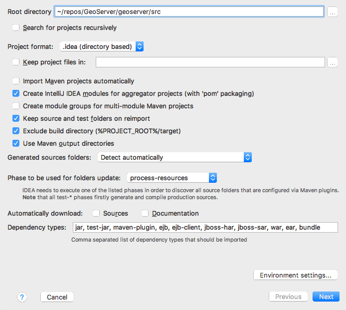
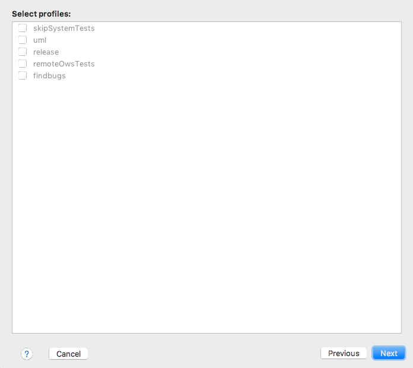
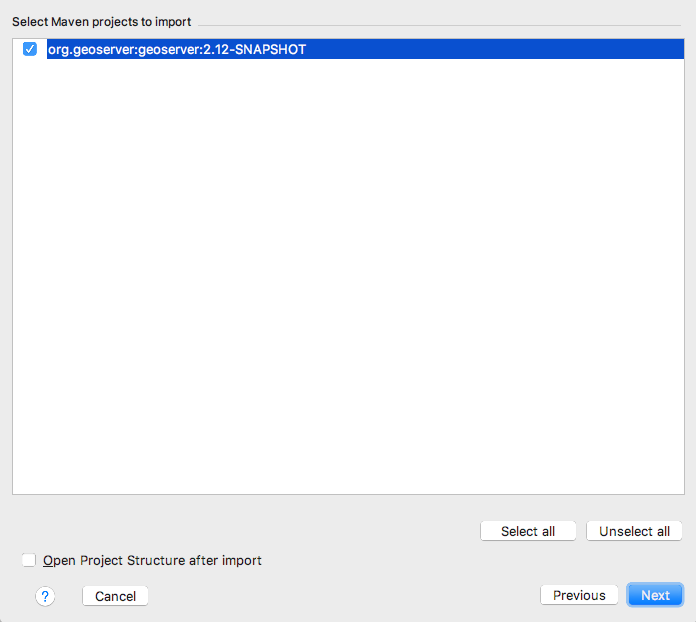
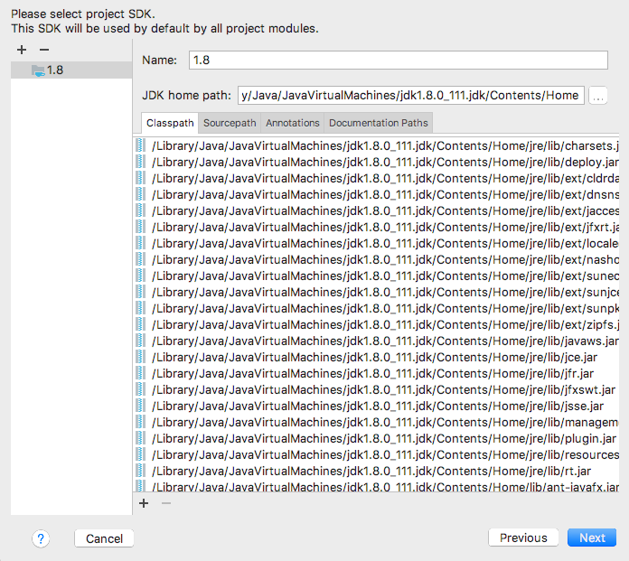
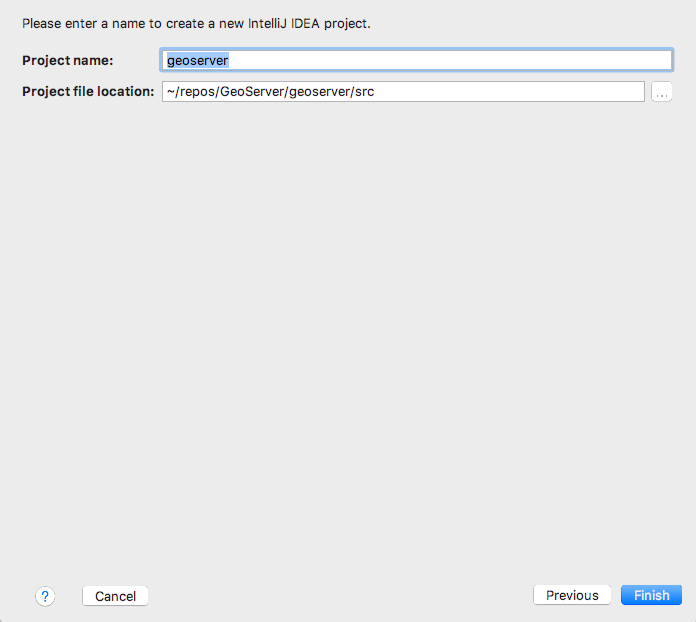
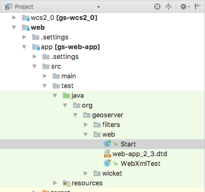
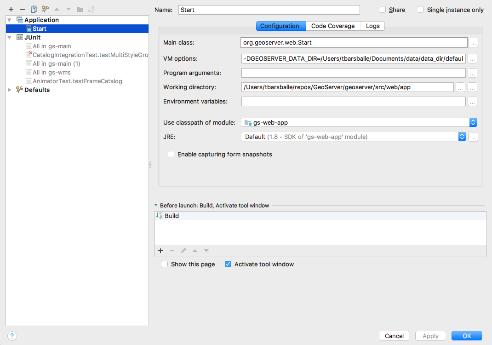
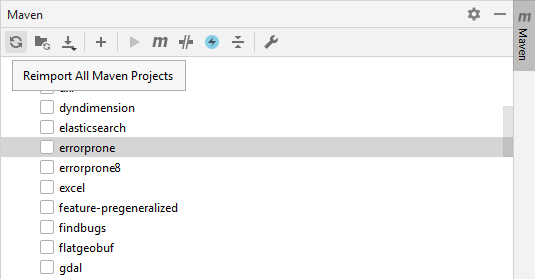

Intellij Quickstart¶
Check out source code¶
Check out the source code from the git repository.:
git clone git://github.com/geoserver/geoserver.git geoserver
To list the available branches.:
% git branch
2.15.x
2.16.x
* master
Choose master for the latest development.:
% git checkout master
Or chose a stable branch for versions less likely to change often:
% git checkout 2.16.x
In this example we will pretend that your source code is in a directory
called geoserver, but a more descriptive name is recommended.
Import modules into Intellij¶
Run the Intellij IDE
Select
File -> New -> Project from Existing Sources....Navigate to the
geoserver/src/pom.xmldirectory and clickOpen.Click
Next, leaving all profiles unchecked.Click
Next, leaving the geoserver project checked.Click
Next, selecting the Java 8 JDK of your choice.Click
Finish
{kind=link}
{kind=link}
{kind=link}
{kind=link}
{kind=link}
Run GeoServer from Intellij¶
From the Project browser select the
web-appmoduleNavigate to the
org.geoserver.webpackageRight-click the
Startclass and click toRun 'Start.main()'The first time you do this, geoserver will fail to start. Navigate to the
Runmenu, an clickEdit Configurations....Select the
Startconfiguration, and appendweb/appto theWorking Directory.While you have the
Edit Configurationsdialog open, you can fine tune your launch environment (including setting a GEOSERVER_DATA_DIR). When you are happy with your settings, clickOK.If there are errors such as “cannot find symbol class ASTAxisId”, some generated code is not being included in the build. Using wcs1_1 as the working directory, run a
mvn clean install.- If you get a compiler error like java.lang.NoSuchMethodError, it is most likely due to
Error Pronetool which doesn’t support Java 8. This tool is switched off by default, but sometimes it turns on after import to IntelliJ. There are two options to fix it: Go to Maven tool window and uncheck the
errorproneprofile, then clickReimport All Maven Projects:If you want to use
errorprone, notably to perform the QA checks, install theError Prone Compilerplugin, restart the IDE and setJavac with error-proneas a default compiler for the project. Please note that this will slower the build.
- If you get a compiler error like java.lang.NoSuchMethodError, it is most likely due to
You can now re-run GeoServer. Select
Run -> Run 'Start'
{kind=link}
{kind=link}
{kind=link}
Note
If you already have a server running on localhost:8080 see the Eclipse Guide for instructions on changing to a different port.
Run GeoServer with Extensions¶
The above instructions assume you want to run GeoServer without any extensions enabled. In cases where you do need certain extensions, the web-app module declares a number of profiles that will enable specific extensions when running Start. To enable an extension, open the Maven Projects window (View -> Tool Windows -> Maven Projects) and select the profile(s) you want to enable.
{kind=link}
The full list of supported profiles can be found in src/web/app/pom.xml.
Access GeoServer front page¶
After a few seconds, GeoServer should be accessible at: http://localhost:8080/geoserver
The default
adminpassword isgeoserver.
Run GeoServer from Intellij on Windows¶
Add bash to your Windows environment path and restart Intellij.
If there are errors such as “cannot find symbol AbstractUserGroupServiceTest”, rebuild the security-tests project in the security module. Right click on the security-tests project and click Rebuild.